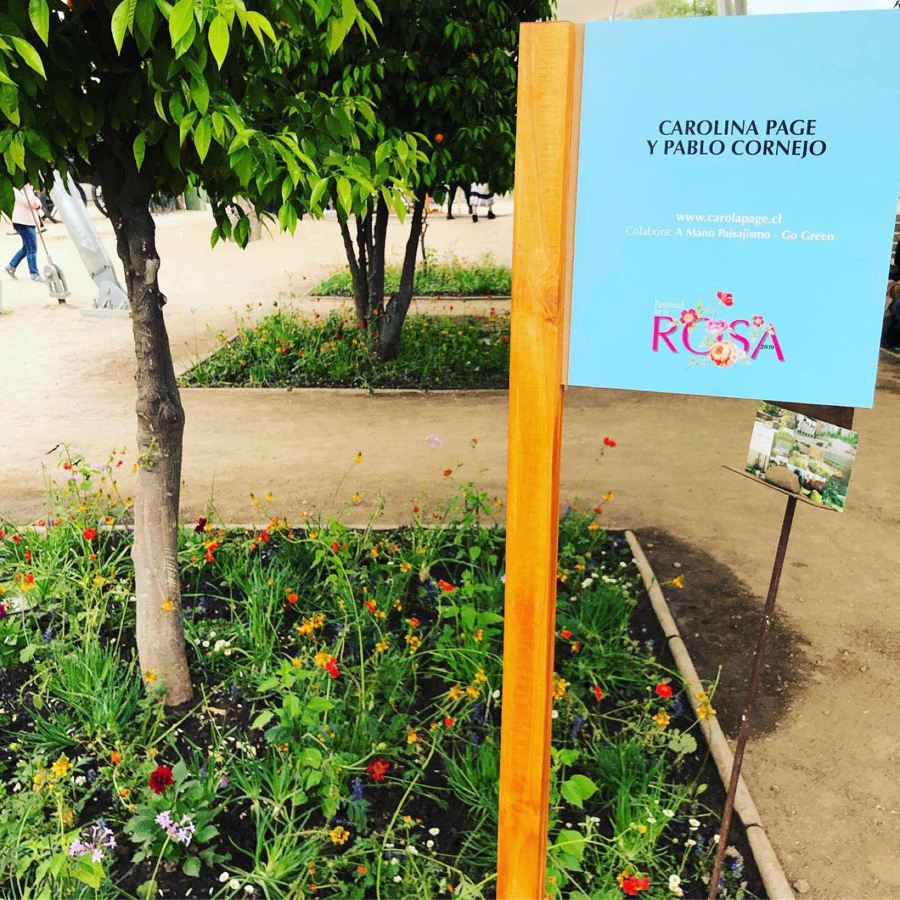
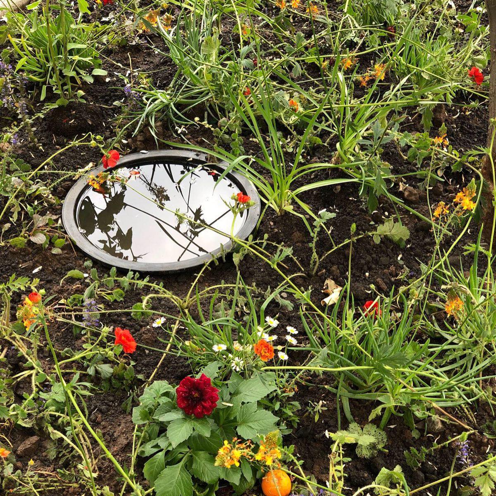
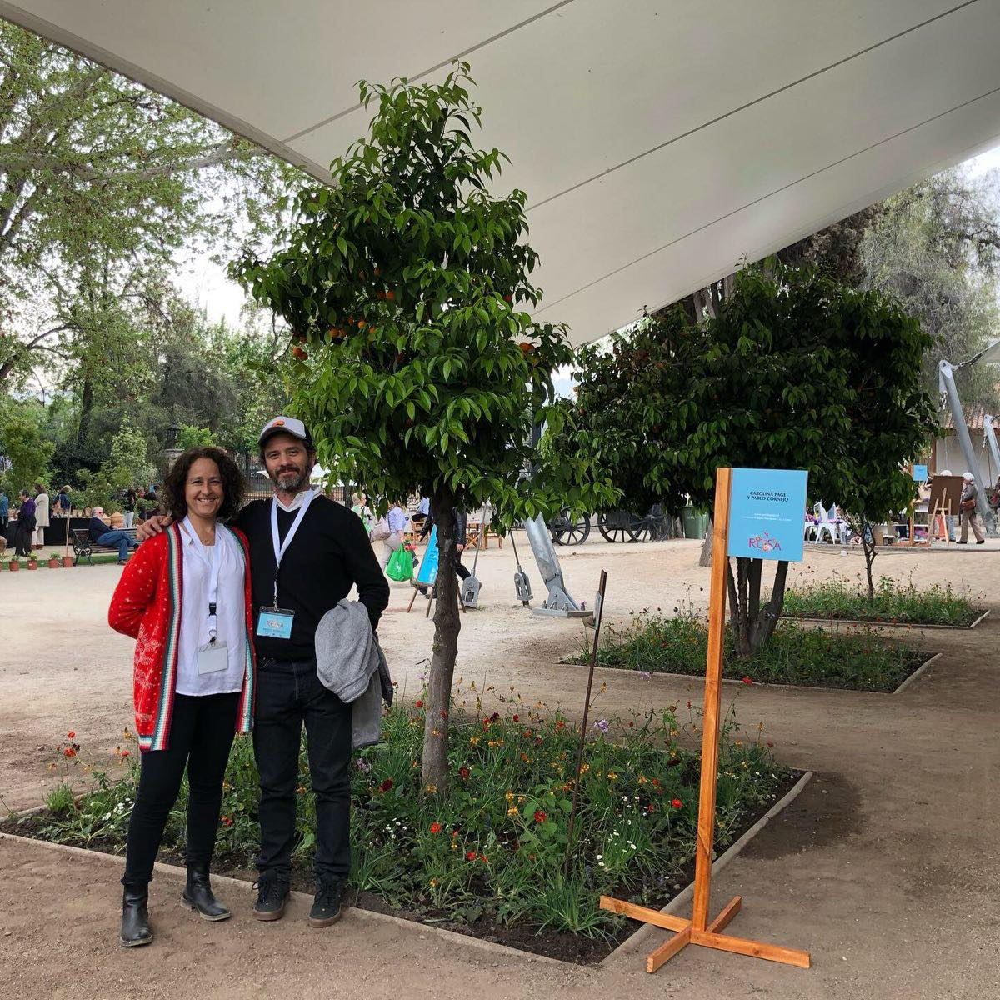
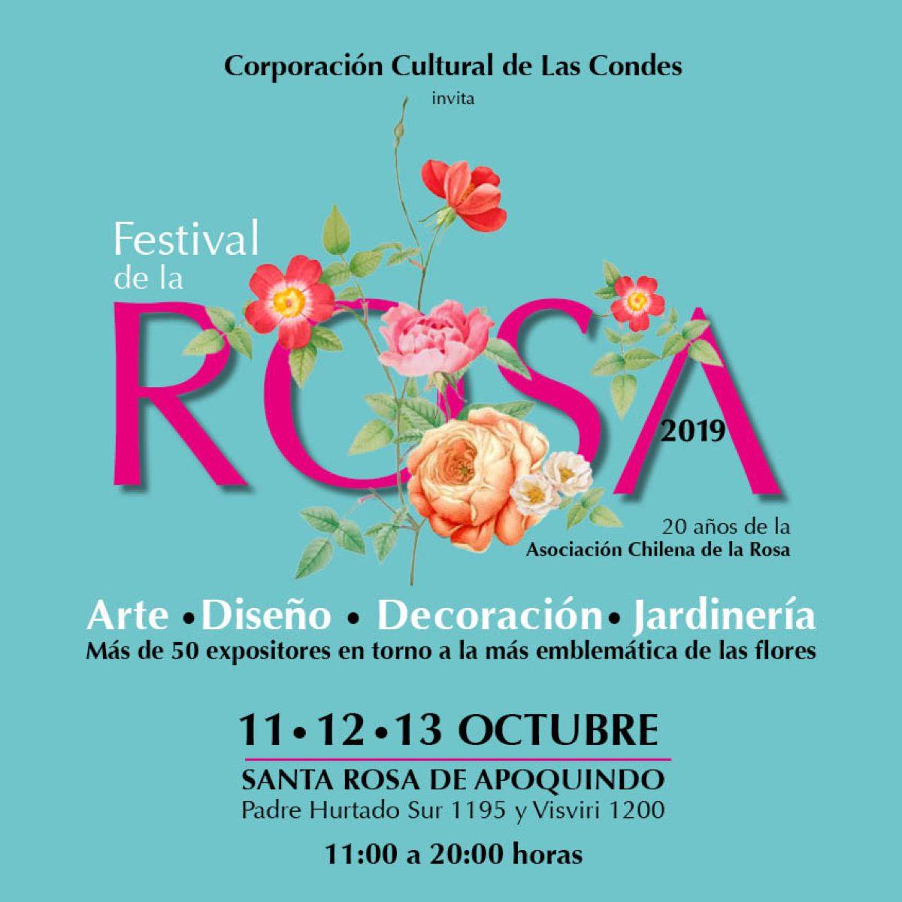

Exposiciones2019
Festival de las Rosas
Texto pendiente: esta carpeta no traía documento con la descripción. Falta el material de Carola para escribir esta sección.




Exposiciones2019
Texto pendiente: esta carpeta no traía documento con la descripción. Falta el material de Carola para escribir esta sección.



